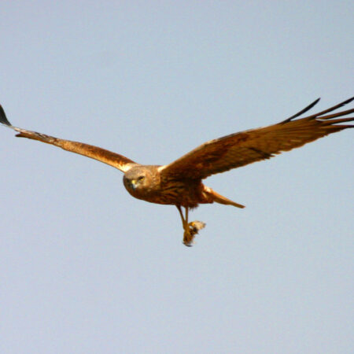

- ネイチャーポジティブ北九州ネットワーク会員
- 福岡県OneHealth登録
- OECM登録（福岡県初）
廃棄物処分場が、日本最大級の自然再生拠点へ
響灘ビオトープ共同事業体は、北九州市若松区に位置する日本最大級のビオトープ（約41ha）を運営する団体です。かつての廃棄物処分場跡地に湿地・草原・淡水池など多様な環境を創出し、絶滅危惧種を含む多くの野生生物が生息する自然再生のモデルケースとして注目されています。
「都市と自然が共生するまち」をビジョンに掲げ、市民・企業・行政が連携したネイチャーポジティブな取り組みを続けています。


響灘ビオトープ 3つの特徴
41ha
面積
日本最大級のビオトープ
廃棄物処分場跡地約41ヘクタールを自然再生。湿地・草原・淡水池など多様な生息環境が広がる。
希少種
の生息拠点
絶滅危惧種が生きる場所
ベッコウトンボ・チュウヒなど、国・県指定の希少種が多数生息・繁殖する。
100円
一般入園料（小中学生無料）
市民に開かれた学びの場
誰でも訪れられる自然体験・環境学習の拠点。野鳥観察会などを定期開催。
活動内容
生物多様性の保全・回復と、市民・企業をつなぐ環境学習を両輪で進める
生物多様性に配慮した環境整備
希少種の生息環境を維持するための湿地管理や外来種対策を実施している。
野鳥観察会
渡り鳥の飛来地としてガイド付きの観察会を定期的に開催している。
フォトミッション・環境学習
季節ごとの生きもの撮影イベントや、学校・企業向けの学習プログラムを提供している。
ネイチャーポジティブ経営支援
企業のネイチャーポジティブ経営や、自然資本を活かした連携づくりを支援している。
施設情報・アクセス
| 所在地 | 〒808-0021 北九州市若松区響町一丁目14-32 響灘ビオトープ内 |
|---|---|
| 電話 | 093-751-2023 |
| 開園時間 | 9:00〜17:00（入園は16:00まで） |
| 休園日 | 火曜日（祝日の場合は翌日） |
| 入園料 | 一般100円／小中学生無料 |
| 駐車場 | 無料（65台） |
| アクセス | JR若松駅から車で約20分 |